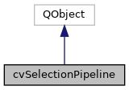

|
ACloudViewer
3.9.4
A Modern Library for 3D Data Processing
|
|
ACloudViewer
3.9.4
A Modern Library for 3D Data Processing
|
Selection pipeline abstraction layer. More...
#include <cvSelectionPipeline.h>


Classes | |
| struct | PixelSelectionInfo |
| Fast Pre-Selection API (ParaView-aligned) More... | |
Public Types | |
| enum | SelectionType { SURFACE_CELLS , SURFACE_POINTS , FRUSTUM_CELLS , FRUSTUM_POINTS , POLYGON_CELLS , POLYGON_POINTS } |
| Selection type. More... | |
| enum | FieldAssociation { FIELD_ASSOCIATION_CELLS = 0 , FIELD_ASSOCIATION_POINTS = 1 } |
| Field association type. More... | |
Signals | |
| void | selectionCompleted (vtkSelection *selection) |
| Emitted when selection is completed. More... | |
| void | errorOccurred (const QString &message) |
| Emitted when an error occurs. More... | |
Public Member Functions | |
| cvSelectionPipeline (QObject *parent=nullptr) | |
| ~cvSelectionPipeline () override | |
| void | setVisualizer (PclUtils::PCLVis *viewer) |
| Set the visualizer for selection operations. More... | |
| vtkSmartPointer< vtkSelection > | executeRectangleSelection (int region[4], SelectionType type) |
| Execute a rectangular selection. More... | |
| vtkSmartPointer< vtkSelection > | executePolygonSelection (vtkIntArray *polygon, SelectionType type) |
| Execute a polygon selection. More... | |
| vtkSmartPointer< vtkSelection > | refinePolygonSelection (vtkSelection *selection, vtkIntArray *polygon, vtkIdType numPoints) |
| Refine polygon selection with point-in-polygon testing. More... | |
| vtkSmartPointer< vtkSelection > | getLastSelection () const |
| Get the last selection result. More... | |
| void | setEnableCaching (bool enable) |
| Enable/disable selection caching. More... | |
| void | clearCache () |
| Clear the selection cache. More... | |
| int | getCacheSize () const |
| Get cache statistics. More... | |
| int | getCacheHits () const |
| int | getCacheMisses () const |
| void | enterSelectionMode () |
| Enter selection mode (ParaView-style cache optimization) More... | |
| void | exitSelectionMode () |
| Exit selection mode and release cached buffers. More... | |
| bool | isInSelectionMode () const |
| Check if currently in selection mode. More... | |
| void | invalidateCachedSelection () |
| Clear selection cache and invalidate cached buffers. More... | |
| void | setPointPickingRadius (unsigned int radius) |
| Point Picking Radius support (ParaView-aligned) More... | |
| unsigned int | getPointPickingRadius () const |
| Get the current point picking radius. More... | |
| PixelSelectionInfo | getPixelSelectionInfo (int x, int y, bool selectCells) |
| Get complete pixel selection information at a screen position. More... | |
| vtkIdType | fastPreSelectAt (int x, int y, bool selectCells) |
| Perform fast pre-selection at a screen position. More... | |
| bool | hasCachedBuffers () const |
| Check if fast pre-selection buffers are available. More... | |
| bool | captureBuffersForFastPreSelection () |
| Capture buffers for fast pre-selection. More... | |
| cvSelectionData | selectCellsOnSurface (const int region[4]) |
| High-level selection API (ParaView-style) More... | |
| cvSelectionData | selectPointsOnSurface (const int region[4]) |
| Select points on surface in a rectangular region. More... | |
| cvSelectionData | selectCellsInPolygon (vtkIntArray *polygon) |
| Select cells in polygon region. More... | |
| cvSelectionData | selectPointsInPolygon (vtkIntArray *polygon) |
| Select points in polygon region. More... | |
Static Public Member Functions | |
| static bool | promptUser (const QString &settingsKey, const QString &title, const QString &message, QWidget *parent=nullptr) |
| Shows instruction dialog if not disabled by user (ParaView-style) More... | |
| static vtkSmartPointer< vtkIdTypeArray > | extractSelectionIds (vtkSelection *selection, FieldAssociation fieldAssociation) |
| Extract selected IDs from vtkSelection. More... | |
| static QMap< vtkProp *, vtkDataSet * > | extractDataFromSelection (vtkSelection *selection) |
| Get data objects from selection (ParaView-style) More... | |
| static vtkDataSet * | getPrimaryDataFromSelection (vtkSelection *selection) |
| Get the primary data object from selection. More... | |
| static cvSelectionData | convertToCvSelectionData (vtkSelection *selection, FieldAssociation fieldAssociation) |
| Convert vtkSelection to cvSelectionData with actor info (ParaView-style) More... | |
| static bool | pointInPolygon (const int point[2], vtkIntArray *polygon, vtkIdType numPoints) |
| Test if a 2D point is inside a polygon (ParaView-aligned) Uses the ray casting algorithm for robust point-in-polygon testing. More... | |
| enum | CombineOperation { OPERATION_DEFAULT = 0 , OPERATION_ADDITION = 1 , OPERATION_SUBTRACTION = 2 , OPERATION_TOGGLE = 3 } |
| Selection combination methods (ParaView-style) More... | |
| static cvSelectionData | combineSelections (const cvSelectionData &sel1, const cvSelectionData &sel2, CombineOperation operation) |
| Combine two selections. More... | |
Selection pipeline abstraction layer.
This class provides a clean abstraction for all selection operations, similar to ParaView's vtkSMSelectionHelper.
Responsibilities:
Reference: ParaView/Remoting/Core/vtkSMSelectionHelper.cxx
Definition at line 53 of file cvSelectionPipeline.h.
Selection combination methods (ParaView-style)
These static methods combine two selections using various operations. Similar to vtkSMSelectionHelper::CombineSelection()
| Enumerator | |
|---|---|
| OPERATION_DEFAULT | Replace (sel2 only) |
| OPERATION_ADDITION | Union (sel1 | sel2) |
| OPERATION_SUBTRACTION | Difference (sel1 & !sel2) |
| OPERATION_TOGGLE | XOR (sel1 ^ sel2) |
Definition at line 389 of file cvSelectionPipeline.h.
Field association type.
| Enumerator | |
|---|---|
| FIELD_ASSOCIATION_CELLS | |
| FIELD_ASSOCIATION_POINTS | |
Definition at line 72 of file cvSelectionPipeline.h.
Selection type.
| Enumerator | |
|---|---|
| SURFACE_CELLS | Surface cells (rectangle) |
| SURFACE_POINTS | Surface points (rectangle) |
| FRUSTUM_CELLS | Frustum cells. |
| FRUSTUM_POINTS | Frustum points. |
| POLYGON_CELLS | Polygon cells. |
| POLYGON_POINTS | Polygon points. |
Definition at line 60 of file cvSelectionPipeline.h.
|
explicit |
Definition at line 53 of file cvSelectionPipeline.cpp.
|
override |
Definition at line 64 of file cvSelectionPipeline.cpp.
References clearCache(), and CVLog::PrintVerbose().
| bool cvSelectionPipeline::captureBuffersForFastPreSelection | ( | ) |
Capture buffers for fast pre-selection.
Call this at the start of interactive selection mode to pre-cache the hardware selection buffers. Subsequent fastPreSelectAt() calls will be very fast until invalidateCachedSelection() is called.
Definition at line 347 of file cvSelectionPipeline.cpp.
References origin, CVLog::Print(), size, and CVLog::Warning().
| void cvSelectionPipeline::clearCache | ( | ) |
Clear the selection cache.
Definition at line 321 of file cvSelectionPipeline.cpp.
Referenced by invalidateCachedSelection(), setEnableCaching(), setVisualizer(), and ~cvSelectionPipeline().
|
static |
Combine two selections.
| sel1 | First selection |
| sel2 | Second selection |
| operation | Combine operation |
Definition at line 983 of file cvSelectionPipeline.cpp.
References cvActorSelectionInfo::actor, cvSelectionData::actorCount(), cvSelectionData::actorInfo(), cvSelectionData::fieldAssociation(), cvSelectionData::isEmpty(), OPERATION_ADDITION, OPERATION_DEFAULT, OPERATION_SUBTRACTION, OPERATION_TOGGLE, CVLog::PrintVerbose(), result, cvSelectionData::vtkArray(), and CVLog::Warning().
Referenced by cvGenericSelectionTool::applySelectionModifierUnified(), cvRenderViewSelectionReaction::finalizeSelection(), and cvGenericSelectionTool::hardwareSelectInRegion().
|
static |
Convert vtkSelection to cvSelectionData with actor info (ParaView-style)
| selection | The vtkSelection result from vtkHardwareSelector |
| fieldAssociation | Field association (cells or points) |
This is the correct ParaView way: extract IDs AND actor information from the selection result, so downstream code knows which actor was selected.
Definition at line 804 of file cvSelectionPipeline.cpp.
References cvActorSelectionInfo::actor, data, extractDataFromSelection(), extractSelectionIds(), cvActorSelectionInfo::polyData, CVLog::Print(), CVLog::PrintVerbose(), result, CVLog::Warning(), and cvActorSelectionInfo::zValue.
Referenced by cvGenericSelectionTool::hardwareSelectInRegion().
| void cvSelectionPipeline::enterSelectionMode | ( | ) |
Enter selection mode (ParaView-style cache optimization)
Call this before starting a selection operation to enable caching of selection render buffers. This prevents unnecessary re-renders during interactive selection. Reference: vtkPVRenderView::INTERACTION_MODE_SELECTION
Definition at line 459 of file cvSelectionPipeline.cpp.
|
signal |
Emitted when an error occurs.
Referenced by executePolygonSelection(), and executeRectangleSelection().
| vtkSmartPointer< vtkSelection > cvSelectionPipeline::executePolygonSelection | ( | vtkIntArray * | polygon, |
| SelectionType | type | ||
| ) |
Execute a polygon selection.
| polygon | Polygon vertices (screen coordinates) |
| type | Selection type |
Definition at line 144 of file cvSelectionPipeline.cpp.
References errorOccurred(), FIELD_ASSOCIATION_CELLS, CVLog::Print(), selectionCompleted(), type, CVLog::Warning(), x, and y.
Referenced by selectCellsInPolygon(), and selectPointsInPolygon().
| vtkSmartPointer< vtkSelection > cvSelectionPipeline::executeRectangleSelection | ( | int | region[4], |
| SelectionType | type | ||
| ) |
Execute a rectangular selection.
| region | Screen-space rectangle [x1, y1, x2, y2] |
| type | Selection type |
Definition at line 94 of file cvSelectionPipeline.cpp.
References copy, errorOccurred(), CVLog::Print(), selectionCompleted(), type, and CVLog::Warning().
Referenced by cvGenericSelectionTool::hardwareSelectInRegion(), selectCellsOnSurface(), and selectPointsOnSurface().
| void cvSelectionPipeline::exitSelectionMode | ( | ) |
Exit selection mode and release cached buffers.
Definition at line 473 of file cvSelectionPipeline.cpp.
Referenced by cvRenderViewSelectionReaction::endSelection().
|
static |
Get data objects from selection (ParaView-style)
| selection | The vtkSelection result from vtkHardwareSelector |
This method extracts the data objects associated with each selected prop (actor) from the selection result. This is the correct ParaView way to handle multi-actor selections.
Definition at line 716 of file cvSelectionPipeline.cpp.
References data, CVLog::PrintVerbose(), result, and CVLog::Warning().
Referenced by convertToCvSelectionData(), and getPrimaryDataFromSelection().
|
static |
Extract selected IDs from vtkSelection.
| selection | The selection object |
| fieldAssociation | Field association (cells or points) |
Definition at line 275 of file cvSelectionPipeline.cpp.
References copy, CVLog::Print(), and CVLog::Warning().
Referenced by convertToCvSelectionData().
| vtkIdType cvSelectionPipeline::fastPreSelectAt | ( | int | x, |
| int | y, | ||
| bool | selectCells | ||
| ) |
Perform fast pre-selection at a screen position.
| x | Screen X coordinate |
| y | Screen Y coordinate |
| selectCells | True for cell selection, false for points |
This method uses cached hardware selection buffers when available, falling back to a single-pixel selection if no cache exists. Much faster than software picking for interactive hover.
NOTE: This only returns the ID. For tooltip display with multiple actors, use getPixelSelectionInfo() instead to get the correct polyData.
Definition at line 451 of file cvSelectionPipeline.cpp.
References cvSelectionPipeline::PixelSelectionInfo::attributeID, getPixelSelectionInfo(), cvSelectionPipeline::PixelSelectionInfo::valid, x, and y.
| int cvSelectionPipeline::getCacheHits | ( | ) | const |
Definition at line 334 of file cvSelectionPipeline.cpp.
| int cvSelectionPipeline::getCacheMisses | ( | ) | const |
Definition at line 337 of file cvSelectionPipeline.cpp.
| int cvSelectionPipeline::getCacheSize | ( | ) | const |
Get cache statistics.
Definition at line 329 of file cvSelectionPipeline.cpp.
|
inline |
Get the last selection result.
Definition at line 195 of file cvSelectionPipeline.h.
Referenced by cvViewSelectionManager::getPolyData().
| cvSelectionPipeline::PixelSelectionInfo cvSelectionPipeline::getPixelSelectionInfo | ( | int | x, |
| int | y, | ||
| bool | selectCells | ||
| ) |
Get complete pixel selection information at a screen position.
| x | Screen X coordinate |
| y | Screen Y coordinate |
| selectCells | True for cell selection, false for points |
This method returns full selection context needed for tooltips, including the specific actor and its polyData that was selected. This fixes the "Invalid cell ID" issue when multiple actors are present.
Definition at line 394 of file cvSelectionPipeline.cpp.
References data, FIELD_ASSOCIATION_CELLS, FIELD_ASSOCIATION_POINTS, result, CVLog::Warning(), x, and y.
Referenced by fastPreSelectAt(), and cvRenderViewSelectionReaction::preSelection().
|
inline |
Get the current point picking radius.
Definition at line 271 of file cvSelectionPipeline.h.
Referenced by cvViewSelectionManager::getPointPickingRadius().
|
static |
Get the primary data object from selection.
| selection | The vtkSelection result |
When multiple actors are selected, this returns the data object with the most selected elements (points + cells).
Definition at line 768 of file cvSelectionPipeline.cpp.
References count, data, extractDataFromSelection(), CVLog::PrintVerbose(), and CVLog::Warning().
Referenced by cvViewSelectionManager::getPolyData().
| bool cvSelectionPipeline::hasCachedBuffers | ( | ) | const |
Check if fast pre-selection buffers are available.
Definition at line 340 of file cvSelectionPipeline.cpp.
| void cvSelectionPipeline::invalidateCachedSelection | ( | ) |
Clear selection cache and invalidate cached buffers.
Call this when the scene changes (e.g., data update, camera change) to ensure stale selection data is not used. Reference: vtkPVRenderView::InvalidateCachedSelection
Definition at line 491 of file cvSelectionPipeline.cpp.
References clearCache().
Referenced by cvViewSelectionManager::clearCurrentSelection(), cvRenderViewSelectionReaction::clearSelectionCache(), cvSelectionToolController::invalidateCache(), cvViewSelectionManager::notifyDataUpdated(), cvRenderViewSelectionReaction::onMiddleButtonRelease(), cvRenderViewSelectionReaction::onRightButtonRelease(), cvRenderViewSelectionReaction::onWheelRotate(), and cvViewSelectionManager::setVisualizer().
|
inline |
Check if currently in selection mode.
Definition at line 235 of file cvSelectionPipeline.h.
|
static |
Test if a 2D point is inside a polygon (ParaView-aligned) Uses the ray casting algorithm for robust point-in-polygon testing.
| point | 2D point coordinates [x, y] |
| polygon | Array of polygon vertices (x1, y1, x2, y2, ...) |
| numPoints | Number of polygon vertices |
Definition at line 1124 of file cvSelectionPipeline.cpp.
References count.
Referenced by refinePolygonSelection().
|
static |
Shows instruction dialog if not disabled by user (ParaView-style)
Similar to pqCoreUtilities::promptUser in ParaView.
| settingsKey | Unique key for storing "don't show again" preference |
| title | Dialog title |
| message | Dialog message (can use HTML) |
| parent | Parent widget |
Definition at line 1289 of file cvSelectionPipeline.cpp.
References CVLog::Print().
Referenced by cvRenderViewSelectionReaction::showInstructionDialog().
| vtkSmartPointer< vtkSelection > cvSelectionPipeline::refinePolygonSelection | ( | vtkSelection * | selection, |
| vtkIntArray * | polygon, | ||
| vtkIdType | numPoints | ||
| ) |
Refine polygon selection with point-in-polygon testing.
| selection | Initial selection from hardware selector |
| polygon | Polygon vertices in screen coordinates |
| numPoints | Number of polygon vertices |
Definition at line 1160 of file cvSelectionPipeline.cpp.
References data, pointInPolygon(), CVLog::Print(), and CVLog::Warning().
| cvSelectionData cvSelectionPipeline::selectCellsInPolygon | ( | vtkIntArray * | polygon | ) |
Select cells in polygon region.
| polygon | Polygon vertices (screen coordinates) |
Definition at line 942 of file cvSelectionPipeline.cpp.
References executePolygonSelection(), FIELD_ASSOCIATION_CELLS, POLYGON_CELLS, CVLog::PrintVerbose(), and CVLog::Warning().
Referenced by cvRenderViewSelectionReaction::selectPolygonCells().
| cvSelectionData cvSelectionPipeline::selectCellsOnSurface | ( | const int | region[4] | ) |
High-level selection API (ParaView-style)
These methods provide a simplified interface that hides VTK details and returns cvSelectionData directly.
Select cells on surface in a rectangular region
| region | Screen-space rectangle [x1, y1, x2, y2] |
Definition at line 923 of file cvSelectionPipeline.cpp.
References executeRectangleSelection(), FIELD_ASSOCIATION_CELLS, and SURFACE_CELLS.
Referenced by cvRenderViewSelectionReaction::selectCellsOnSurface().
|
signal |
Emitted when selection is completed.
Referenced by executePolygonSelection(), and executeRectangleSelection().
| cvSelectionData cvSelectionPipeline::selectPointsInPolygon | ( | vtkIntArray * | polygon | ) |
Select points in polygon region.
| polygon | Polygon vertices (screen coordinates) |
Definition at line 961 of file cvSelectionPipeline.cpp.
References executePolygonSelection(), FIELD_ASSOCIATION_POINTS, POLYGON_POINTS, CVLog::PrintVerbose(), and CVLog::Warning().
Referenced by cvRenderViewSelectionReaction::selectPolygonPoints().
| cvSelectionData cvSelectionPipeline::selectPointsOnSurface | ( | const int | region[4] | ) |
Select points on surface in a rectangular region.
| region | Screen-space rectangle [x1, y1, x2, y2] |
Definition at line 932 of file cvSelectionPipeline.cpp.
References executeRectangleSelection(), FIELD_ASSOCIATION_POINTS, and SURFACE_POINTS.
Referenced by cvRenderViewSelectionReaction::selectPointsOnSurface().
| void cvSelectionPipeline::setEnableCaching | ( | bool | enable | ) |
Enable/disable selection caching.
| enable | True to enable caching |
Definition at line 308 of file cvSelectionPipeline.cpp.
References clearCache(), and CVLog::Print().
| void cvSelectionPipeline::setPointPickingRadius | ( | unsigned int | radius | ) |
Point Picking Radius support (ParaView-aligned)
When selecting a single point and no hit is found at the exact pixel location, the selector will search in a radius around the click point to find nearby points. This improves usability for point cloud selection.
Reference: vtkPVRenderViewSettings::GetPointPickingRadius() vtkPVHardwareSelector::Select()
Set the point picking radius (in pixels)
| radius | Radius in pixels (0 = disabled) |
Default is 5 pixels. Set to 0 to disable radius-based picking.
Definition at line 516 of file cvSelectionPipeline.cpp.
References CVLog::Print().
Referenced by cvViewSelectionManager::setPointPickingRadius().
| void cvSelectionPipeline::setVisualizer | ( | PclUtils::PCLVis * | viewer | ) |
Set the visualizer for selection operations.
Definition at line 74 of file cvSelectionPipeline.cpp.
References clearCache(), PclUtils::PCLVis::getCurrentRenderer(), and CVLog::PrintVerbose().
Referenced by cvViewSelectionManager::setVisualizer().